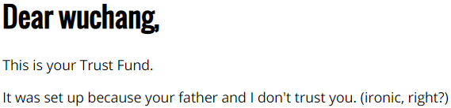
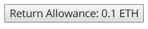
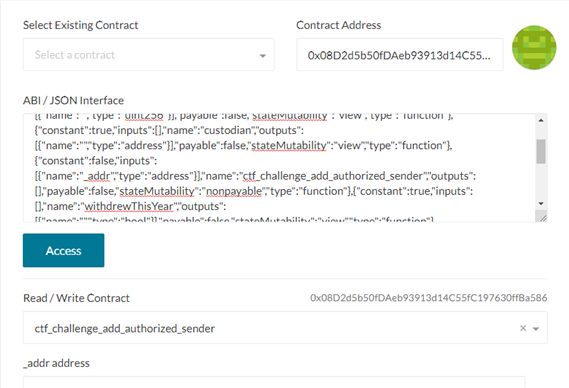
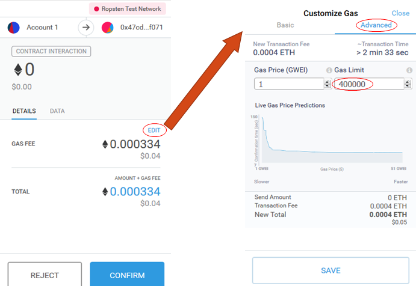
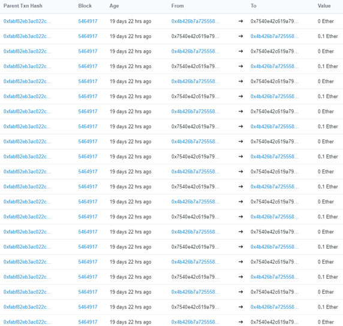

This codelab will walk you through the vulnerability that led to a hard fork in Ethereum. The vulnerability, re-entrancy, is a result from having Solidity, a Turing-complete language, be used to develop contracts. If you'd like more information on smart contract vulnerabilities, I would recommend visiting https://github.com/sigp/solidity-security-blog or viewing the associated screencast lectures available from class.
This level contract is quite simple. A custodian has set up a contract that contains a certain amount of ETH. Because the recipient can not be trusted to spend the ETH wisely, the custodian has programmed the contract so that only 1/10 of the ETH can be withdrawn each year.


The constructor for the contract sets an amount of ETH that the beneficiary can withdraw each year. The amount is set so that it would take 10 years to withdraw all of the ETH that the custodian has placed in the fund. In addition, there is a function that is called to update the state required to determine if a beneficiary has waited a year before attempting to withdraw from the fund again.
contract TrustFund is CtfFramework{
uint256 public allowancePerYear;
uint256 public startDate;
uint256 public numberOfWithdrawls;
bool public withdrewThisYear;
address public custodian;
constructor(...) public payable CtfFramework(...) {
custodian = msg.sender;
allowancePerYear = msg.value.div(10);
startDate = now;
}
function checkIfYearHasPassed() internal {
if (now>=startDate + numberOfWithdrawls * 365 days){
withdrewThisYear = false;
}
}Within the contract, there is a withdraw() call that allows the beneficiary to take ETH out. There is also a returnFunds() call to allow the beneficiary to put ETH back. Note that in the withdraw() function that the state for logging that a withdrawal has happened (e.g. withdrewThisYear = true) is updated after the contract has called the fallback function via msg.sender.call.value(allowancePerYear)() to send the allowancePerYear amount to the msg.sender (i.e. the beneficiary).
function withdraw() external {
require(allowancePerYear > 0, "No Allowances Allowed");
checkIfYearHasPassed();
require(!withdrewThisYear, "Already Withdrew This Year");
if (msg.sender.call.value(allowancePerYear)()){
withdrewThisYear = true;
numberOfWithdrawls = numberOfWithdrawls.add(1);
}
}
function returnFunds() external payable {
require(msg.value == allowancePerYear,
"Incorrect Transaction Value");
require(withdrewThisYear==true,
"Cannot Return Funds Before Withdraw");
withdrewThisYear = false;
numberOfWithdrawls=numberOfWithdrawls.sub(1);
}To empty out the TrustFund without waiting 10 years, we'll need to use an attacking contract to recursively call withdraw()so that all 10 withdrawals can happen before the withdrewThisYear boolean can be updated. To do so, upon receiving payment in the fallback function of the attacking contract, we will have its code call withdraw() again. This will initiate another call in the TrustFund contract before its state can be updated to invalidate the subsequent withdrawals. The fallback function in the attacking contract can then continue this repeatedly until all of the ETH is obtained. We have left this as an exercise for you to do.
While developing your attacking contract, keep in mind the following.
Access to the TrustFund contract is only given to the CTF launcher and your wallet address. Since we will be using the attacking contract to access the TrustFund contract, its address must be added to the authorized sender list via ctf_challenge_add_authorized_sender beforehand.

Since our attacking contract is the one that is pulling the ETH from the TrustFund contract, it would be good to to include a mechanism to collect ETH from the attacking contract after it exploits CTF level. This can be done with a withdraw() function that sends back the contract balance to your wallet or a selfdestruct() call with your wallet address as the parmeter.
Running out of gas in a transaction occurs when your wallet underestimates the amount required to perform a transaction. While typically, the wallet can take a look at the code your transaction is invoking and accurately estimate the amount of gas it needs to execute, it has difficulty with loops and recursion. This is the bane of Turing-complete languages like Solidity that are being used to implement smart contracts. Because the transaction you're using to kick of the re-entrancy exploit will kick off additional calls, it is unclear a priori how much gas it needs. Note that gas from the first invocation of the call is forwarded to subsequent calls as part of the EVM calling convention. So, within Metamask, take the estimate of gas required and simply crank it up to its maximum (i.e. the gas limit)


In addition,
(e.g. cs410b-Wuchang-Feng/sictf/trustfund/trustfundattack.sol)
Re-entrancy is one of the main reasons developers would want to avoid Turing-complete languages to implement smart contracts. As this level shows, unless a developer has adhered to the "Checks-Effects-Interactions" pattern, it may be vulnerable to exploitation.